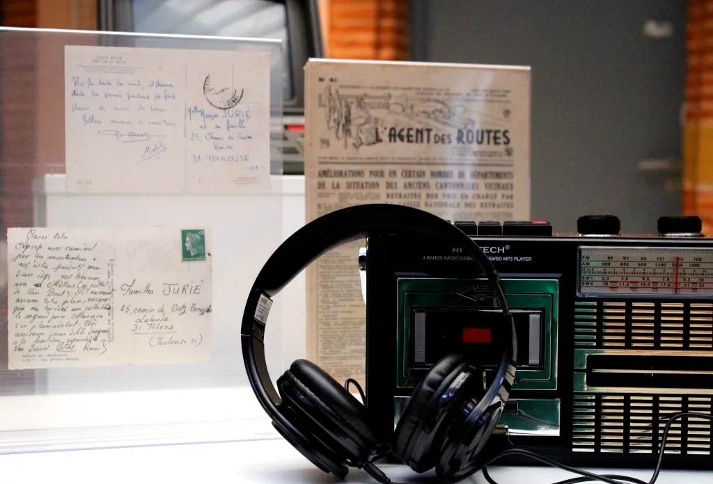
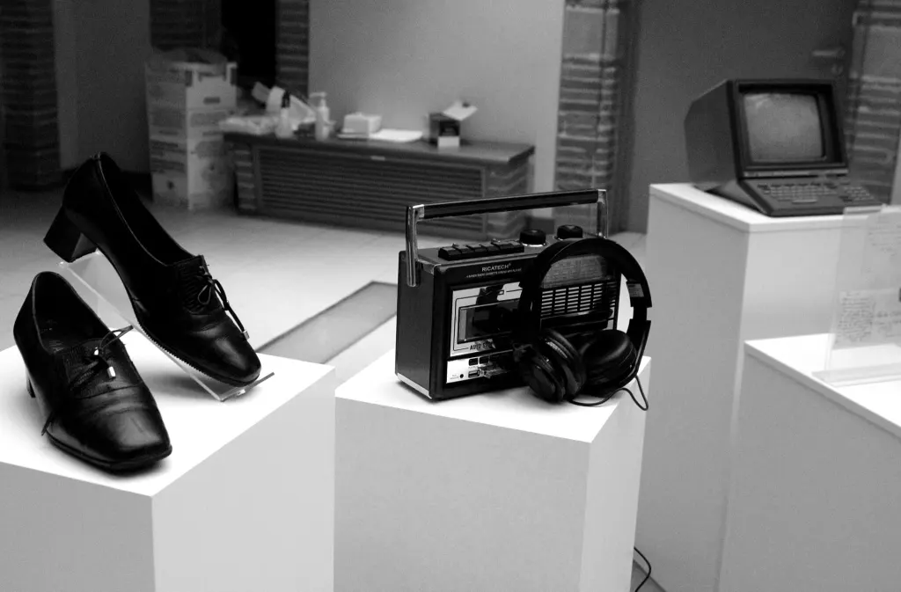

THEATRE ET SOUVENIRS
PROJET CREE DANS LE CADRE DE L'APPEL A PROJET
"FOND DE SOUTIEN A L'INITIATIVE CULTURELLE ET LOCALE"
PAR LE DEPARTEMENT DE LA HAUTE GARONNE
DUREE : 3ANS
La compagnie L’Enclos va travailler avec les résidents d’un EHPAD en
périphérie de Toulouse pendant 3 ans pour ramener la culture à ceux
qui ne peuvent que difficilement y avoir accès par le biais de son
projet « Théâtre et Souvenirs ». Nous avons choisi la thématique du
Souvenir comme un fil rouge dans notre travail,
comme un moyen de tisser un lien entre le vécu des résidents et ce
que nous vivons aujourd’hui.
Dans une époque où le progrès est de plus en plus rapide et
vertigineux, où la technologie évolue à la vitesse de la lumière, où
nous avons de plus en plus de moyens de communiquer à distance mais
de moins en moins de temps pour discuter avec nos proches, nous
avons eu l’envie de rencontrer ces résidents. De
les écouter. De les inciter à s’exprimer devant un public. De
découvrir des textes parfois poétiques, parfois tout à fait liés au
quotidien. L’objectif de ce projet a été de reconstruire cette idée
de « l’ensemble », de former un groupe où chacun brille par sa
personnalité et par la richesse de son vécu.
Nous avons divisé cet atelier en plusieurs thématiques : « Communication et autres Technologies , Mode et Cuisine, Culture et Loisirs, Politique, Ecole…« . Ce qui nous a permis de nous plonger dans le souvenir de ce temps d’avant, de nous remémorer avec sourire de la mélodie de certaines chansons, des recettes avec lesquelles nous avons tous grandi, oubliées sous la poussière des vieux livres de recette, de la joie lorsqu’on recevait des cartes postales de notre famille et nos amis. Ces thématiques via lesquelles on a également essayé à la fois de ramener les résidents à aujourd’hui par le biais de vidéos portant sur les tendances actuelles de la manière d’échanger, de s’habiller.
 
Chaque année, après 9 séances d’ateliers avec les résidents, nous
terminons le projet par une exposition. Cette
dernière est la trace visuelle et sonore de notre travail. La trace
des objets autour desquels on a échangé, la trace des témoignages
des résidents, à la fois par des extraits sonores et par des images
filmés lors des séances. C’est également le moyen de mettre en
lumière les bribes de leur progression lors de ces ateliers, de
leurs efforts, de leur sens de la repartie et de leur
persistance.
A côté de cet axe du souvenir et du recueil de parole, nous avons
souhaité que les résidents puissent également en parallèle toucher
au jeu théâtral. C’est pourquoi à l’aide de texte de théâtre comme
toute autre forme littéraire (recette, discours politique, parole de
chanson…) , nous avons incité chacun à lire tout en mettant une
intention de jeu (colère, tristesse, joie…). Lors du vernissage de
l’exposition, les résidents deviennent acteurs et jouent devant
leurs familles et les autres résidents. Ce moment est unique car
chaque résident peut exprimer ses capacités théâtrales.
Année 2021-22 :
Projet réalisé au sein de l’EHPAD Le Castelet à Muret (31).
Année 2022-23 :
Projet réalisé au sein de l’EHPAD Tiers Temps à Blagnac (31).
Remerciements :
Le Conseil Départemental de la Haute Garonne, les animatrices des EHPAD (Cathy Morant et Marie-Christine Durban) ,Aurélié Bordet (art thérapeute) Hee Jen Kim et Mathilde Foriel-Destezet (vidéaste et montage), Mélissa Mathieu (curateur d’art) et Pauline Drolet (régisseuse), les résidents.
Crédit photo :
Pauline Drolet